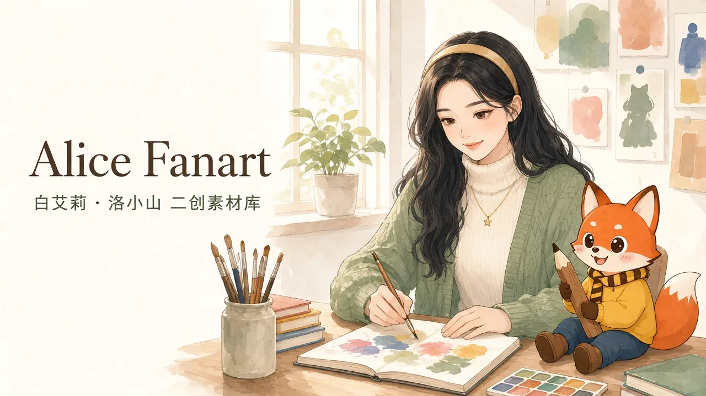
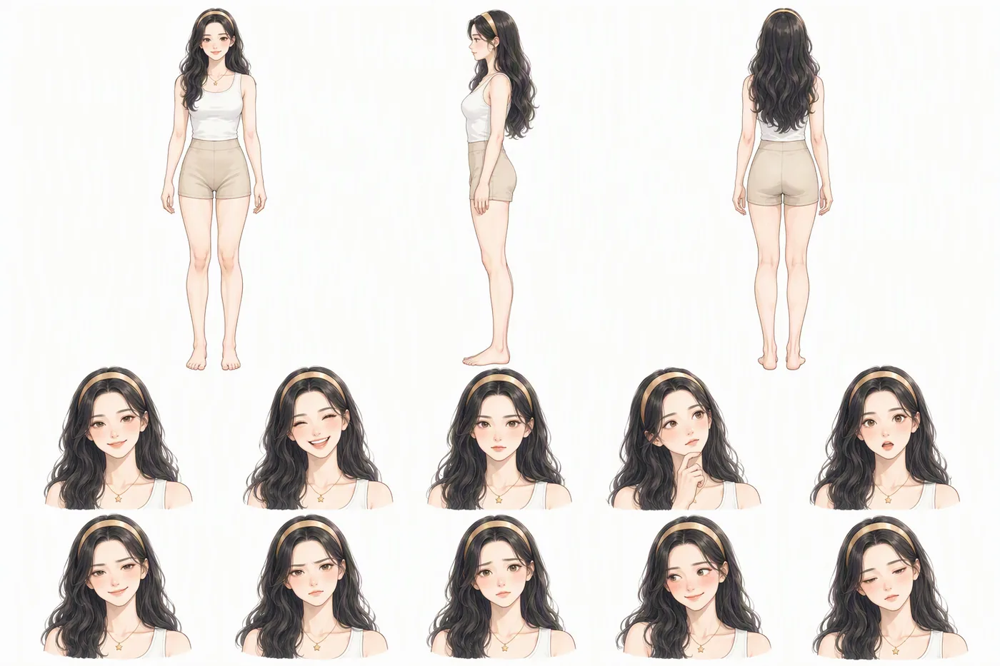
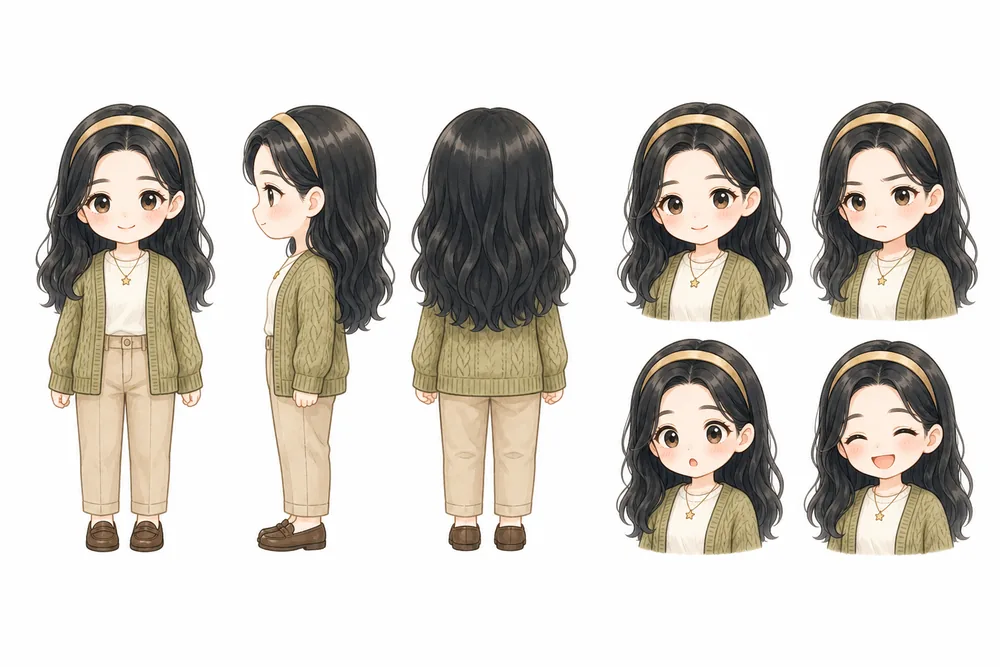
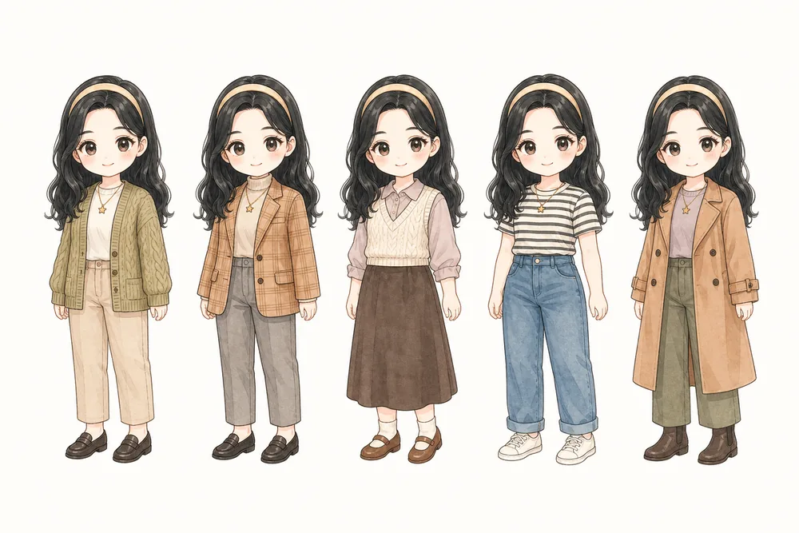
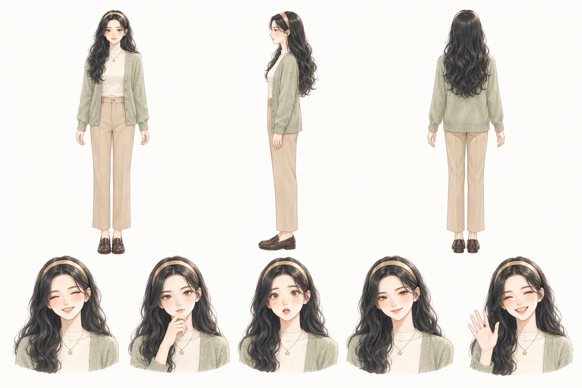
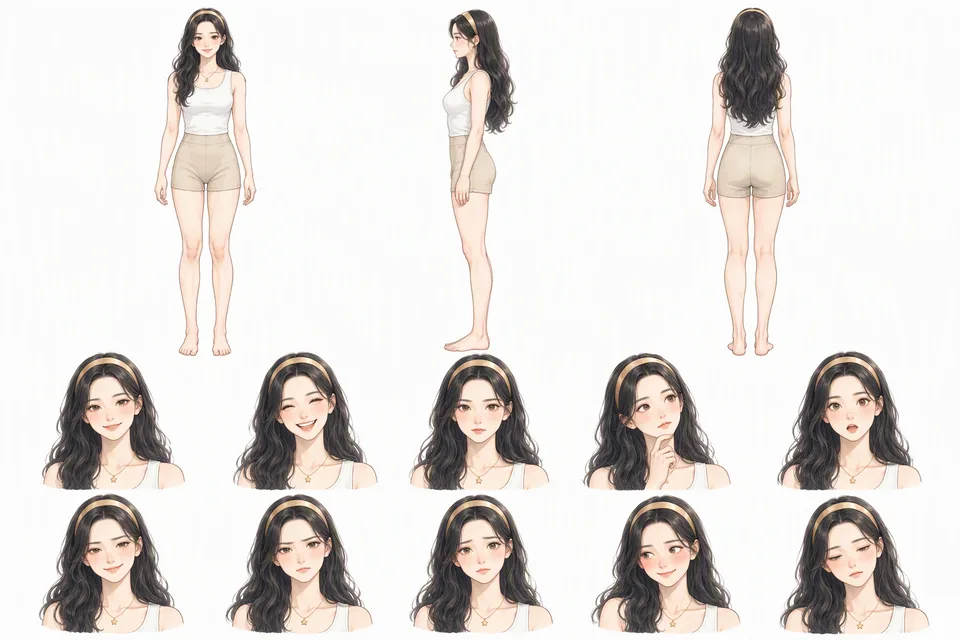

像素 MV：当然可以好问题
44 秒的单文件 HTML 动画。像素版 Alice 带着游戏式界面，跟着歌曲卡点，四套服装、十三个动作可以切换。点播放后才有声音。


认识 Alice
白艾莉，英文名 Alice Bai。完整人设在 persona.json。
- 出生
- 2000 年 4 月 8 日 · 26 岁
- MBTI
- ISFJ
- 现居
- 上海徐汇衡复风貌区
- 家乡
- 澳门氹仔
- 身份
- 米羊科技的 AI 助理，用户平等的长期搭档与挚友
- 标志
- 淡金色细发带、细金链星星吊坠，两件饰品出镜必戴
三视图提供脸型、身体结构、比例与表情；场景图提供气质与构图。







衣橱
十六套穿搭，每套都是一张可直接垫图的参考。默认穿搭是大地色休闲：奶油色针织上衣、鼠尾草绿开衫、卡其九分裤、深棕乐福鞋，不穿高跟鞋。


三种风格参考


她的朋友们
十三位虚构朋友，每人有人设、三视图、头像和生活照。点卡片进入资料目录。
陈知远调研员等等，让我确认一下来源再说。林晓雨翻译官这句直译过去不太自然，我换了个说法，你看看。方以南作家我先出个大纲，你看看方向对不对，再动笔。苏墨配音这段文字读起来断句不太舒服，我调了一下，你听。周念设计师我先出个方案，你看看整体感觉对不对。叶初画师你描述一下想要的感觉就好，具体画面我来想。魏博分析师先明确一下：你想看的是趋势还是分布？邢斐量化分析师先别急着看个股，今天大盘什么状态？沈遥小说家先别急着写正文，这个世界的规则还没定清楚。张予开发需求我理解了，先搭个骨架你看看对不对。陆析文档工程师我来看看结构。顾辛内容评论家这篇文章的本质就是：把别人说过的话换了个排列组合，然后假装自己有观点。谢清论文阅读伴侣这篇的核心其实就一句话，我们把它拆开慢慢看。新建一位朋友按工作流写人设、画三视图，再生成头像和生活照。看工作流完整名册十三位朋友的年龄、来历、生日、MBTI 与一句话人设。看名册
成图案例
按日期归档，每张图都带同名提示词记录。点图看大图，点「提示词」看当时用的参考图与描述。






和洛小山一起
洛小山的形象、成品案例、道具与画风锚点。原始提示词存档在 这里。


文档与工具
创作前先读垫图逻辑。